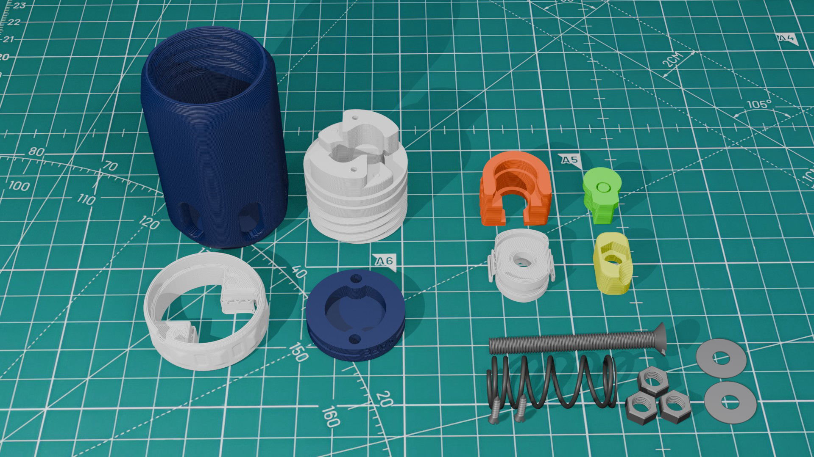
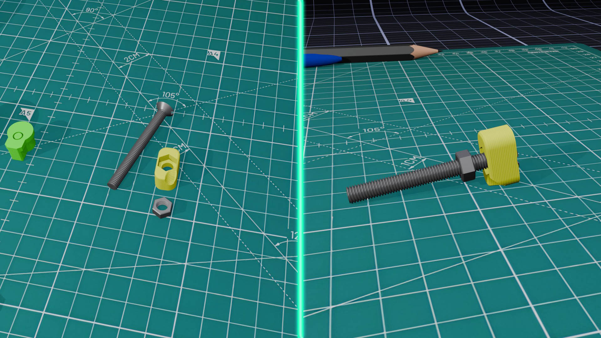
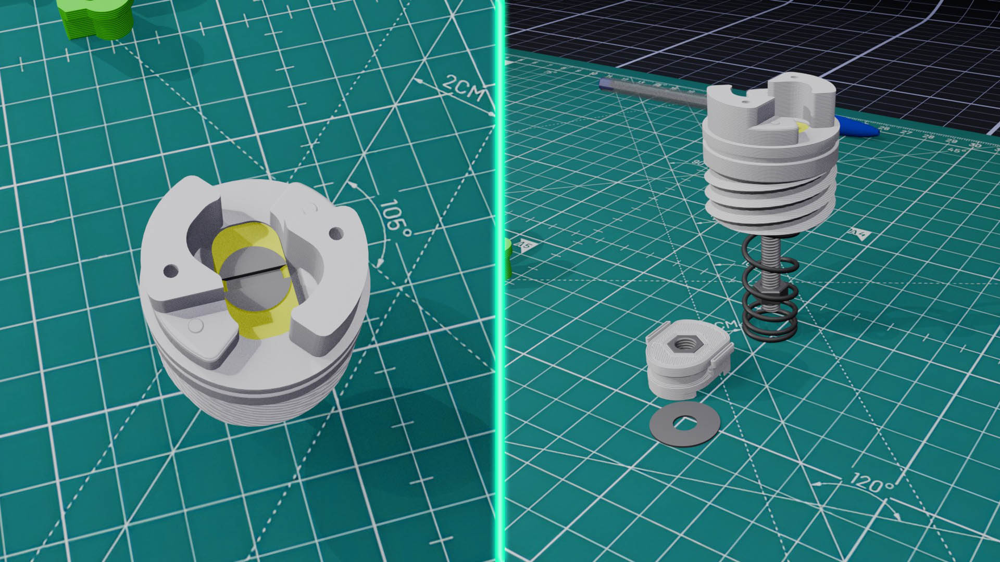
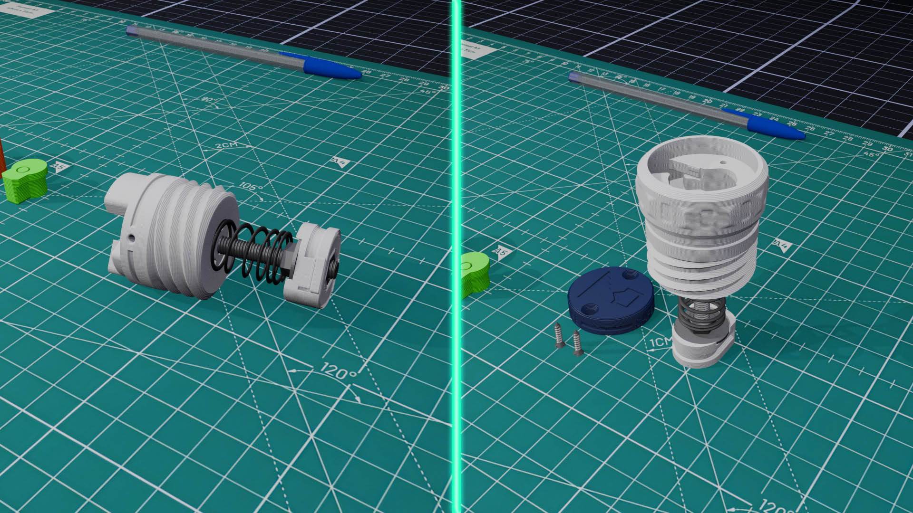
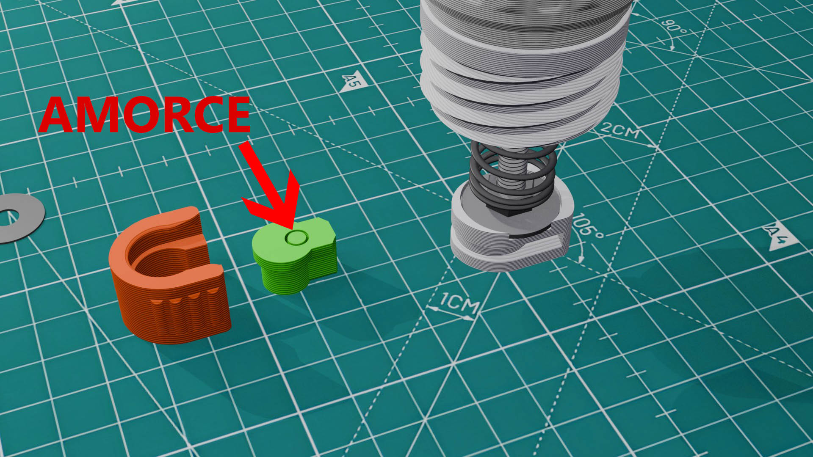
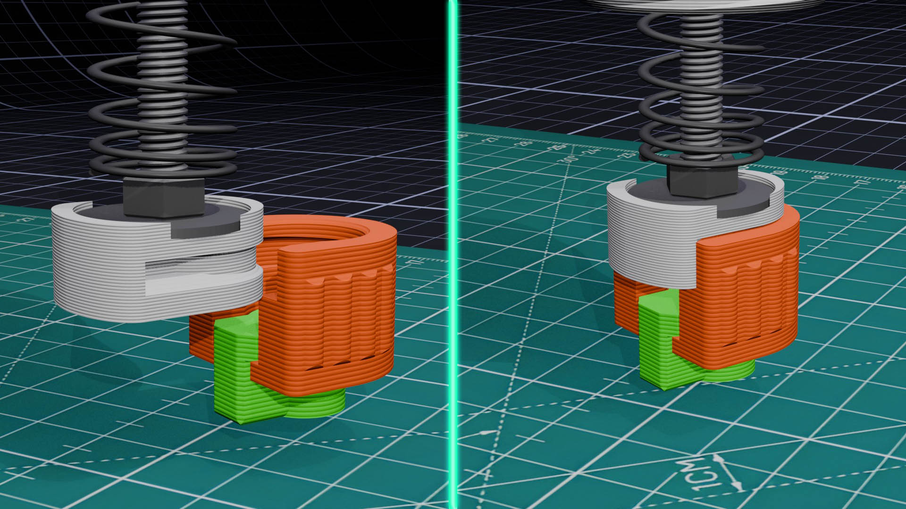
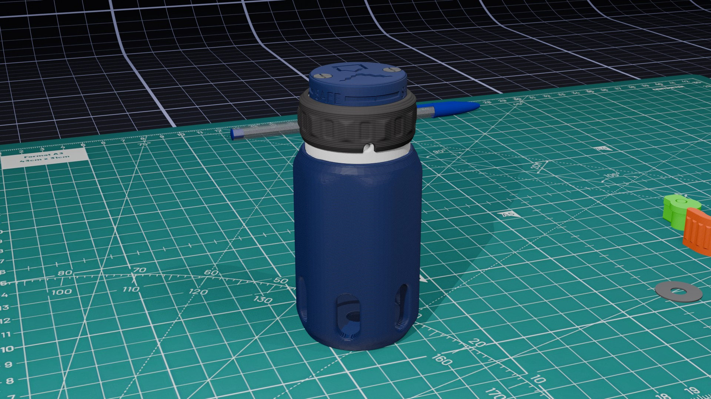

xTrude
Assemblage et Fonctionnement SH1TN4DE
Page d'assemblage et mode d'emploi de la Sh1tN4de, la grenade d'impact pour Airsoft.
Liste complète des pièces imprimées et de la quincaillerie nécessaire pour assembler une Sh1tN4de.
Vérification avant montage.
Assemblage des différentes pièces.
Consignes et règles de sécurité à respecter.
Réglages permettant d'obtenir un déclenchement fiable.
Mettre la Sh1tN4de en fonction.
Résolution des problèmes les plus courants.

Liste complète des pièces imprimées et de la quincaillerie nécessaire pour une Sh1tN4de.
Un check-up avant montage pour vérifier la conformité des pièces.
Le modèle est conçu pour une imprimante avec une tolérance de 0,1 mm max. La qualité d'impression de votre imprimante est essentielle pour le bon fonctionnement. Effectuez toujours un bed leveling avant impression des STL.
La clearance (jeu entre les pièces) doit donc être 0,1 au mm maximum. Un mauvais réglage peut entraîner trop de jeu ou à l'inverse, un blocage des pièces.
Vérifiez l’absence de bavures dans les orifices, de warping ou de défauts pouvant gêner le glissement des pièces et leurs fonctionnement.

Insérez le dernier écrou dans Amorce_A (après retrait des supports), comprimez légèrement le ressort si nécessaire, puis vissez jusqu’au contact.


Quelques règles de sécurité basiques et évidentes à respecter.
Cette grenade est destinée uniquement à une utilisation sur terrain autorisé. Toute utilisation se fait sous la responsabilité de l’utilisateur, qui doit respecter les règles du terrain, de l’organisateur et la réglementation applicable.
Avant chaque utilisation, vérifiez que la grenade est en bon état et ne présente aucun dommage.
Une détonation incontrôlée peut survenir, notamment si la grenade est mal configurée.
Cette grenade est destinée exclusivement à un environnement adapté.
Je ne suis pas tenu responsable des dommages matériels ou corporels résultant d’une mauvaise utilisation, d’une modification du produit, du non-respect des consignes de sécurité ou de l’utilisation d’un type d’amorce non prévu.
En cas de doute sur le bon fonctionnement de la grenade, ne l’utilisez pas.
L’utilisation de cette grenade doit toujours être autorisée par les organisateurs de la partie.
Avant chaque partie, précisez le type d’amorce utilisé (209 Primer, 6 mm à blanc, Ring Cap 8 coups, mono-amorce).
Respectez les règles spécifiques du terrain concernant les grenades, les effets sonores et les distances de sécurité. Si un organisateur refuse leur utilisation, sa décision doit être respectée.
Ce réglage permet d’ajuster la sensibilité de déclenchement à l’impact.
Avant tout, il est important de faire un ou plusieurs tests à vide afin de trouver le bon réglage pour votre grenade.
Pour cela, utilisez uniquement le capuchon et l’ensemble des éléments montés lors de l’assemblage (voir section Assemblage).
Armez la grenade de la même façon que dans la première vidéo du chapitre Chargement amorce - Mode SAFE/ARMED, puis verrouillez et déverrouillez le système. Attention : un déclenchement peut se produire à ce moment-là, manipulez avec précaution. Si la grenade se déclenche direct, elle est trop sensible. Voir "moins de sensibilité" en dessous. Sinon, continuez le test.
Une fois la grenade armée et sous tension, placez-la à environ 40 cm du sol et laissez-la tomber sans impulsion. Le déclenchement devrait se produire. Si ce n’est pas le cas, elle n’est pas assez sensible.
Voir réglages ci-dessous :
Visser la pièce Amorce_A afin d’augmenter la compression du ressort.
Cela rend le déclenchement plus sensible à l’impact.
Attention : ne pas trop visser la pièce, la tige filetée ne doit pas trop sortir,
ce qui pourrait empêcher la mise en place de l’amorce.
Dévisser la pièce Amorce_A afin de réduire la compression du ressort.
Cela rend le déclenchement moins sensible à l’impact.
Attention : ne pas trop dévisser la pièce, la tige filetée doit etre minimum a fleur de l'écrou m5 de la piece Amorce_A
Procédure de chargement (exemple avec ring cap, principe identique pour les autres).



Problèmes et solutions possible.
Si les pièces ne rentrent pas les unes dans les autres ou présentent au contraire trop de jeu, le problème provient surement de la précision d'impression.
La conception a été réalisée et testée sur mes deux imprimantes avec une tolérance maximale de 0,1 mm (une moyenne proche de 0,0 mm). Vérifiez les paramètres de votre slicer (calibration de l'extrusion, compensation XY, débit, etc.) afin d'obtenir des dimensions plus précises.
La sensibilité du système de percussion est probablement trop élevée.
Il est recommandé d'ajuster le réglage en suivant la section :
Réglage de la sensibilité du striker.
Si le problème persiste, il faut vérifier que « Guide.stl » soit correctement imprimé et qu'il ne soit pas trop
libre dans le capuchon (trop de jeu).
Le système nécessite un impact suffisamment franc pour se déclencher. Si la grenade tombe dans de hautes herbes, un tas de feuilles ou toute autre surface molle, le déclenchement peut ne pas se produire.
Il est conseillé de viser une surface plus rigide. (Tronc d'arbre, palette, zone dégagée...).
Si le problème persiste, augmentez légèrement la sensibilité en consultant la section :
Réglage de la sensibilité du striker "Test de sensibilité".
Avant toute opération de rechargement, assurez-vous de repasser la grenade en mode ARMÉ en relevant la bague puis en effectuant un quart de tour dans le sens des aiguilles d'une montre. Une légère résistance doit être ressentie lorsque le système est correctement réglé.
Vous pouvez ensuite reprendre la procédure décrite dans Chargement amorce - Mode SAFE/ARMED.
Si la grenade refuse toujours de se verrouiller, vérifiez que la vis M5x50 utilisée possède une tête de 10 mm maximum. Le problème peut également provenir d'un défaut d'impression ou d'un mauvais réglage de votre imprimante.
N'hésitez pas à me faire part de tout problème rencontré afin d'enrichir cette section et d'améliorer la documentation. Vous pouvez me contacter à l'adresse suivante : xtrude3d@proton.me